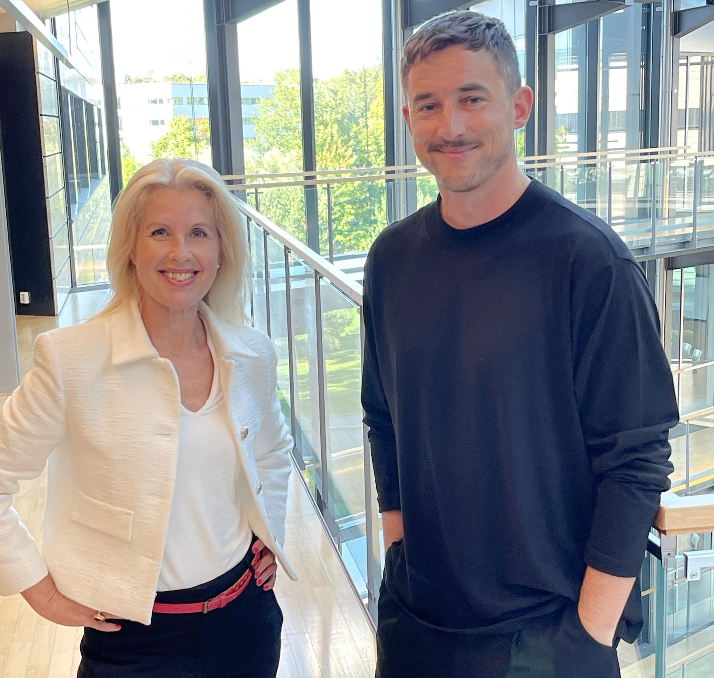

«King of Entertainment» – strømme- og TV-leverandøren Allente velger SALO
Allente sier «smått er godt» og har valgt SALO Kommunikasjon som nytt PR-byrå i Norge fra høsten 2023.
Allente sier «smått er godt» og har valgt SALO Kommunikasjon som nytt PR-byrå i Norge fra høsten 2023.

– Allente er den mest spennende aktøren på underholdningsmarkedet i Norge og Norden. Stikkordet er sylskarp satsing på skreddersydd innhold, utvalgte strømmetjenester og digitale produkter og opplevelser for brukerne, i kombinasjon med prisvinnende kundeservice. Vi setter stor pris på tilliten, og gleder oss til å bistå dem i arbeidet med å bygge Allentes posisjon som Nordens ubestridte «King of Entertainment», sier Ole Winther, daglig leder i SALO Kommunikasjon.
– Vårt utgangspunkt nå er å fortsette å bygge kjennskap til alt vi kan tilby kundene våre. I SALO Kommunikasjon fant vi det vi lette etter når vi ville ha en ny PR-partner for dette arbeidet: Vi opplever SALO som ledende på merkevare- og markeds-PR i Norge, både når det gjelder strategisk tenkning og operativ gjennomføring. Samtidig er de et boutiquebyrå, med evnen til å snu seg raskt rundt, og operere som den ekstra medarbeideren vi ofte trenger, sier kommunikasjonsdirektør Maja Wikman Ulrich i Allente.
28. august 2025
Fra SALO14. august 2025
PR og medier25. juni 2025
Ta kontakt med oss, så finner vi tid for et effektivt arbeidsmøte.
post@salokommunikasjon.no